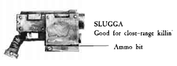
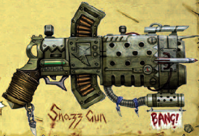
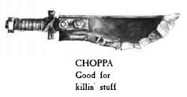
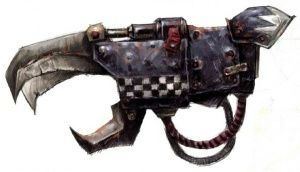

!!!Freebooter Warhouse!!!
Weapons for killin!
From Sluggaz to Snazzgunz

 From the up close sluggaz to the overcharged snazzgun. We got the gunz of destruction to splatter any 'umie.
Buy in bulk and we throw in sum gretchin to carry 'ur extra ammo. Don't worry we got the ones that expode aswell.
From Choppas to Powa Klaws.

 From the standard choppa to the mekboyz overpowered powerklaw. We got the blades to cut through the toughest
of tin kanz those 'umies can hide in. Works very well at squishing those large bugs as well. So come on down
to the Freebooter Warhouse.
Kaptin Badrukk is the greatest Freebooter of his age, a monstrous, roaring privateer bedecked in barbarous
finery. Badrukk's Flash Gitz carry enough firepower into battle to level a well-defended hab-block, and the Kaptin
totes the most fearsome firearm of the lot. Badrukk and his villainous crew are legends among their own cutthroat
subculture, thundering through space in their oversized Kill Kroozer Da Blacktoof, and they have fought at the
side of every major Warboss worth following in recent history. Wherever the Kaptin and his ladz make planetfall,
misery and destruction are sure to follow, for Badrukk's Flash Gitz are superlative reavers who live to commit
murder and cause mayhem, stealing everything they can get their claws on.
Years ago, Badrukk was chased out of the Bad Moons clan on charges of having too many teef for his own good. From the day
of his exile, Badrukk's accomplishments have far outstripped those of his fellow Freebooter kaptins. Fighting
alongside the fleet of Warlord Garaghak, Badrukk blunted a tendril of the Tyranid Hive Fleet Kraken in 993.M41
with an all-guns-blazing raid upon the Norn Queen at its heart. During the War of Dakka, his warriors outshot
a Tau Hunter Cadre. Some even claim that the Kaptin personally brought down a Freeblade Knight armed with nought
but a hair Squig and several inebriated Snotlings, though it seems likely that such tales have grown in the telling.
Some even claim that the Kaptin has personally killed one of the powerful spaceborne leviathans called Void-Whales.
Most recently, Badrukk has been engaged in a series of bloody skirmishes against Space Wolves forces deep in
the Sanctus Reach sub-sector. A rumour persists that these raids are being performed at the behest of a shady
and extremely generous employer, but Badrukk is playing his cards extremely close to his chest.
For an Ork, Badrukk is unusually cunning and has proved to be an excellent strategist and tactician. He often acts as a tactical
advisor to any Ork Warlord or Warboss wealthy enough to meet his outrageously high fees. After the battle, Badrukk's
Flash Gitz usually "persuade" their new employers to give them the largest share of any loot or salvage before
they return to the Da Blacktoof and seek more chaos and carnage. Despite this blackmail, many Ork Warlords see
this as a price well worth paying for the sake of a better fight than usual and the wonderfully intoxicating
sight of seeing Badrukk and his Flash Gitz unleash their wonderful and lethal toys upon the enemy
"Everywhere Mankind has travelled, there too are the Orks. They infest this galaxy, and no doubt others, like the crude parasites
they are. My only hope is that they kill one another before they kill us." — Watch Captain Evangelos,
Deathwatch